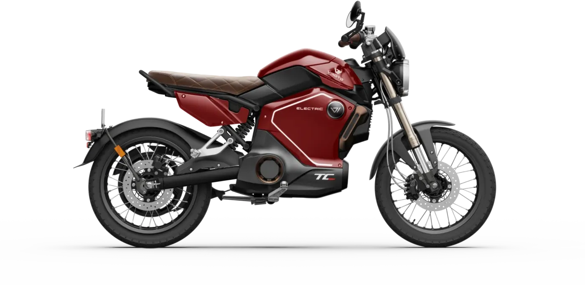
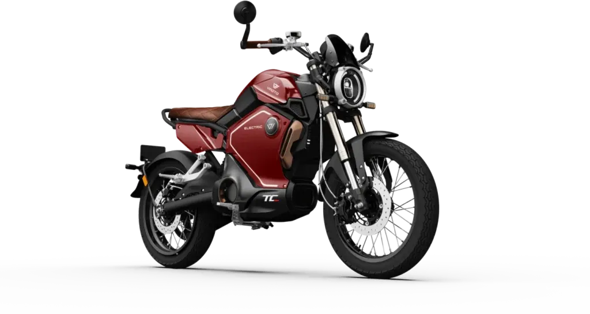
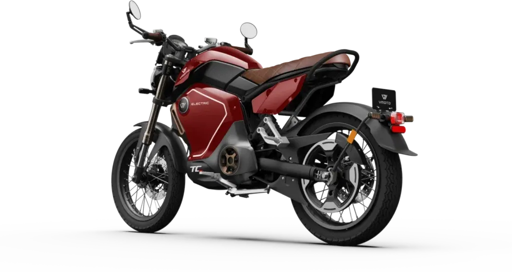
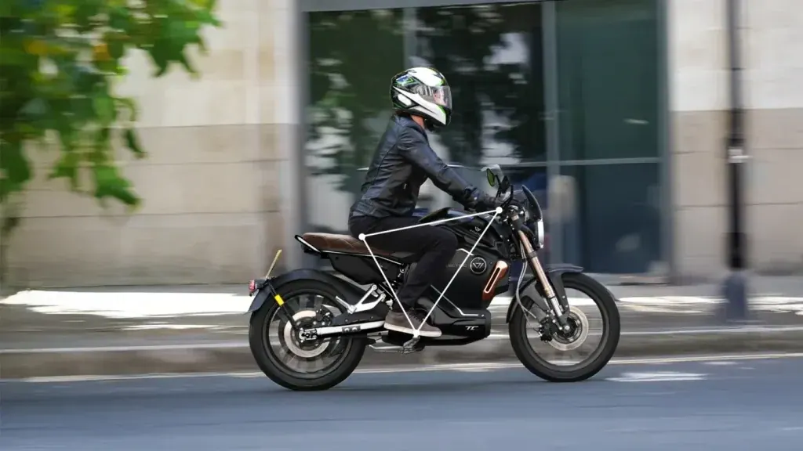
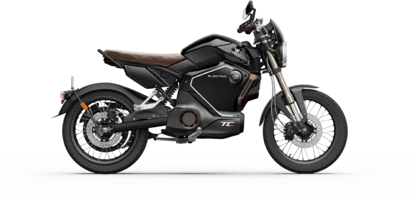

Vmoto
STASH
B·A1 Eléctrica · 14,4 kW · Deportivas
Propuesta de OpsPilot para Expomoto Córdoba, en revisión. No es la web oficial: expomotocordoba.es
Inicio › Motos › Vmoto › TC MAX

Vmoto
Maximiza la experiencia de conducción
Precio y financiación: te los damos al momento por teléfono (pendientes de publicar en la web).




La ciudad es tuya para recorrerla con total tranquilidad. El asiento, en símil cuero acolchado, ofrece confort incluso en los trayectos más largos, y el sistema de frenado combinado hace que este vehículo sea seguro y fiable.
Equipada con una batería de 72V/45Ah, la TC Max alcanza **hasta 92 km de autonomía, ideal para desplazamientos urbanos.
Se recarga fácilmente en aproximadamente 5 horas desde un enchufe doméstico, ofreciendo una solución cómoda, eficiente y sin complicaciones. Gracias a su motor eléctrico y alto par, la TC Max supera pendientes con total facilidad. Perfecta para ciudad y recorridos con desnivel, manteniendo siempre una conducción suave y estable.
Integrado en el chasis y conectado a la rueda trasera mediante una correa dentada, el motor central permite una distribución óptima del peso entre los ejes delantero y trasero, mejorando la experiencia de conducción.
El sistema de suspensión avanzado absorbe irregularidades y se adapta a diferentes superficies, garantizando estabilidad y comodidad en cada trayecto.
La TC Max está diseñada para ofrecer una experiencia completa: cómoda en el día a día y emocionante cuando quieres algo más. Su ergonomía favorece una postura relajada, reduciendo la fatiga incluso en trayectos largos, sin perder agilidad ni sensaciones.
Desarrollada por ingenieros expertos y sometida a pruebas exigentes, te permite disfrutar de cada kilómetro con control total.
| Motor | motor central con transmisión por correa |
|---|---|
| Homologación | L3e-A1 (equivalente a 125cc.) |
| Potencia nominal | 3,9 kw |
| Potencia máxima | 5,1 kw |
| Refrigeración | Aire |
| Velocidad máxima | 95 km/h |
| Autonomía | 92 km homologado con 2 baterías |
| Ángulo de pendiente superable | 10° |
| Batería | Batería extraible de polímero de litio |
| Nº baterías | 1 extraible |
| Capacidad por batería | 3,2 kWh (72V 45Ah) |
| Tiempos carga por batería y cargador disponible | 5 h con el cargador por defecto 72V10A (35300-QSMM-M000) |
| Suspensión delantera | Invertida doble brazo hidráulico |
| Suspensión trasera | Mono amortiguador central hidráulico |
| Freno delantero | Disco |
| Freno trasero | Disco CBS |
| Neumáticos | Delantera 90/80-17 | Trasera 120/70-17 |
| Llantas | Delantera 2.15-17 | Trasera 3.5-17 |
| Distancia entre ejes | 1347 mm |
| Peso | 79 kg |
| Largo x ancho x alto | 1982 mm*744 mm*1044 mm |
| Peso máximo admisible (mmta) | 254 kg |
| Ocupantes | 2 |
| Colores | Negro, Rojo |
Datos de la marca, tal como se publican en expomotocordoba.es.